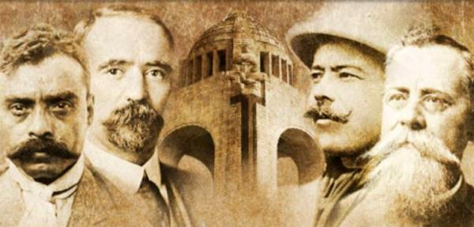

Descubre las etapas mas importantes de Mexico desde los Aztecas hasta hoy.
| 1. Culturas Prehispanicas | 2. La Conquista | 3. Independencia |
| 4. Revolucion Mexicana | 5. Personajes Historicos | 6. CONOCE MAS |
Nombre: [JOSE SNTONIO JACOBO NEGRETE] | Grupo: [3AP] | Carrera: PROGRAMACION | Proyecto SCRUM - Historia de Mexico